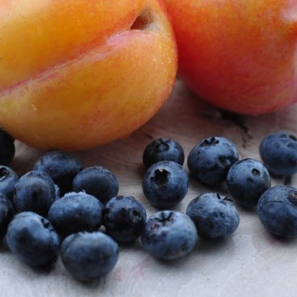
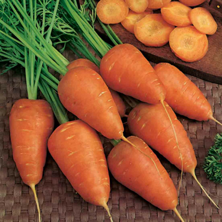
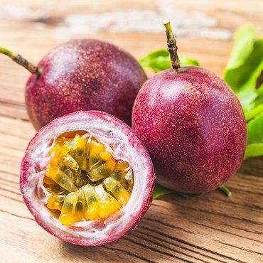
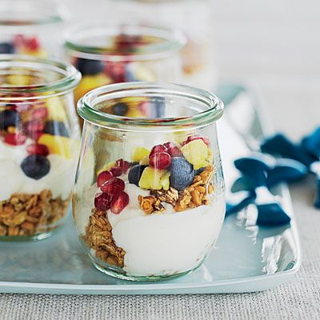
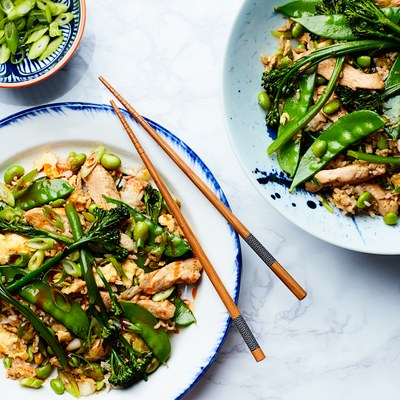
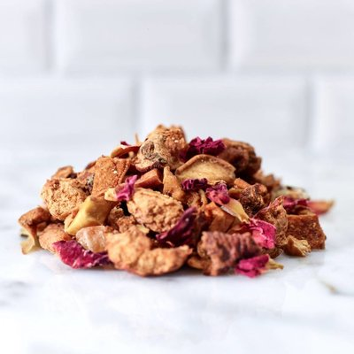
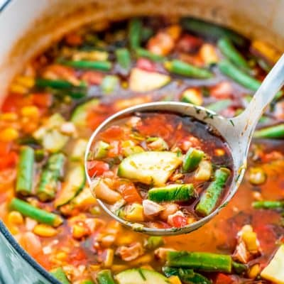

Về Organic Food
Organic Food Thực phẩm hữu cơ là cửa hàng chuyên cung cấp những loại thực phẩm được sản
xuất bằng phương thức và tiêu chuẩn của nông nghiệp hữu cơ. Tiêu chuẩn về thực phẩm hữu
cơ là khác nhau trên thế giới. Tuy nhiên nông nghiệp hữu cơ nói chung luôn hướng đến
nuôi trồng thúc đẩy cân bằng sinh thái, đa dạng và bảo tồn đa dạng sinh học.
Trong sản xuất nông nghiệp hữu cơ, Organic Food hạn chế sử dụng một số loại thuốc trừ sâu, thuốc diệt cỏ và phân bón tổng hợp. Thực phẩm hữu cơ cũng không được phép xử lý bằng chiếu xạ, dung môi công nghiệp hoặc các chất phụ gia thực phẩm tổng hợp.
Trong sản xuất nông nghiệp hữu cơ, Organic Food hạn chế sử dụng một số loại thuốc trừ sâu, thuốc diệt cỏ và phân bón tổng hợp. Thực phẩm hữu cơ cũng không được phép xử lý bằng chiếu xạ, dung môi công nghiệp hoặc các chất phụ gia thực phẩm tổng hợp.
Organic Food có gì?

Trái cây

Rau củ

Ngũ cốc - hạt
Tại sao nên dùng sản phẩm của Organic Food?
Rau sạch đầu tiên và duy nhất mà bạn có thể truy xuất nguồn gốc chi tiết, biết chính xác
gói rau của mình đã được trồng như thế nào, từ khi làm đất, gieo hạt đến khi thu hoạch,
thông qua hệ thống Nhật ký điện tử.
Rau sạch đầu tiên và duy nhất mà bạn có thể truy xuất nguồn gốc chi tiết, biết chính xác
gói rau của mình đã được trồng như thế nào, từ khi làm đất, gieo hạt đến khi thu hoạch,
thông qua hệ thống Nhật ký điện tử.
Rau sạch đầu tiên và duy nhất mà bạn có thể truy xuất nguồn gốc chi tiết, biết chính xác
gói rau của mình đã được trồng như thế nào, từ khi làm đất, gieo hạt đến khi thu hoạch,
thông qua hệ thống Nhật ký điện tử.
Organic Food phát triển như thế nào?

Blog của Organic Food
Hãy cùng chúng tôi chế biến những món ăn tốt cho sức khỏe

”
Yogurt trái cây
Chút vị ngọt ngào của các loại trái cây, chút men chua của
sữa chua hoà nguyện với nhau...nhìn dịu dàng...quyến rũ....lắm đa...

”
Rau củ xào thịt
Thịt xào rau củ vừa chứa nhiều chất dinh dưỡng vừa tạo cảm
giác ngon miệng, không bị ngấy là món ăn được nhiều gia đình Việt yêu thích. Vậy,
bạn đã biết cách chế biến món thịt xào rau củ thập cẩm chưa?

”
Canh rau củ
Với cách nấu súp rau củ cắt hạt lựu thế này thì người lớn
tuổi trong gia đình và các cháu nhỏ cũng rất dễ ăn. Rau củ cắt hạt lựu lại nhanh
chín, thích hợp cho những ai bận rộn.

”
Canh rau củ
Với cách nấu súp rau củ cắt hạt lựu thế này thì người lớn
tuổi trong gia đình và các cháu nhỏ cũng rất dễ ăn. Rau củ cắt hạt lựu lại nhanh
chín, thích hợp cho những ai bận rộn.